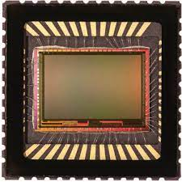

Standard Dynamic Range (SDR) Bilder haben im Gegensatz zu HDR Bildern einen geringerem Dynamikumfang, was zu Informationsverlust in sehr hellen sowie sehr dunklen Bereichen eines Bildes führt. Kurzgesagt ist der Dynamikumfang der Unterschied zwischen dem dunkelsten und dem hellsten Bereich eines Fotos, eine genauere Definition wird im Laufe dieses Artikels geklärt. Dieser fehlende Dynamikumfang stellt für viele Anwendungsgebiete ein Problem da, da dadurch wichtige Informationen eines Bildes verloren gehen können. HDRI bietet verschiedene Methoden, um HDR Bilder zu erstellen, welche abhängig vom Anwendungsfall sind. Durch den höheren Dynamikumfang von HDR ist das Spektrum an Helligkeitsunterschieden eines Bildes viel größer und bietet, wie wir in den nächsten Kapiteln sehen werden, in gewissen Situationen einen größeren Spielraum für die Aufnahme sowie Nutzung von Bildern. Die meisten aktuellen Displaytechnologien sind darauf ausgelegt das Spektrum von SDR anzeigen zu können. Ist der Dynamikumfang noch geringer als bei SDR, spricht man von Low Dynamic Range, dies sind dementsprechend Bilder mit niedrigem Dynamikumfang.
HDR Bilder kommen in einigen Bereichen zu Einsatz. In der Computergrafik wird HDR verwendet, um künstlich bzw. digital erstellte Objekte realistisch darzustellen, wodurch auch 3D Szenen lebendiger wirken. In bestimmten Bereichen wie der virtuellen Realität ist vor allem die akkurate Wiedergabe von Farben und Lichtern in den Szenen besonders wichtig, um in die Umgebung eintauchen zu können. Ähnlich ist es in der Architektur, hierbei ist es auch besonders wichtig bereits in der Planung realitätsnahe Modelle darzustellen. In der Digitalfotografie wird HDR verwendet um vor allem Szenen mit sehr hellen sowie dunklen Bereichen detailreich darzustellen. Diese daraus entstehenden Bilder bieten außerdem einen viel größeren Spielraum in der Nachbearbeitung, da mehr Details erhalten sind. Im Sicherheitsbereich nutzen Überwachungssysteme HDR, um diese vielseitig nutzbarer zu machen, somit können Szenen mit großen Helligkeitsunterschieden ohne separate Überwachungskameras für die jeweiligen Bereiche überwacht werden. In der Medizin werden besonders kleine Kamerasensorenbenötigt, um dennoch ein detailreiches Resultat zu liefern, müssen diese Sensoren in der Lage sein auch bei schwachen Lichtbedingungen so viel Information wie möglich aufzunehmen.
Im Gegensatz zum menschlichen Auge kann sich ein Kamerasensor nur bedingt an unterschiedliche Umgebungshelligkeiten anpassen. Besonders schwierig sind schnelle Wechsel von einem hellen zu einem dunklen Ort. Der Grund dafür ist der beschränkte Dynamikbereich der Technik. Die Reichweite zwischen dem hellsten und dem dunkelsten Bereich eines Motives wird als Dynamikumfang oder kurz Dynamik bezeichnet. Der verteilt sich über maximal 23 Blendenstufen von der Dunkelheit der Nacht bis hin zur prallen Mittagssonne. Das menschliche Auge kann ungefähr 20 dieser Blendenstufen erfassen. Bezogen auf die Fotografie, haben qualitativ hochwertige und moderne Kameras einen Dynamikumfang von 9 bis 12 Blendenstufen. Ältere Modelle verfügen nur über 8 Blendenstufen. Der Dynamikumfang einer Aufnahme ist umso höher, je mehr Helligkeitsabstufungen ein Motiv hat. Je grösser die Dynamik, desto mehr Details sind erkennbar. Je kleiner der Dynamikbereich ist, desto detailärmer wird das Bild. Das Objekt verschwimmt dann mit dem Bildhintergrund. Wenn der mögliche Dynamikbereich von einer Kamera überschritten wird, gehen die darüber hinaus liegenden Bildinformationen verloren. Häufig ist es dann so, dass bei Aufnahmen in der Natur mit Menschen im Vordergrund aufgrund eines kleinen Dynamikbereichs entweder ein überbelichteter Himmel oder überbelichtete Gesichter entstehen. Dann kann man sich den Dynamikumfang auch ausrechnen und zwar mit Hilfe von Lichtstopps. Lichtstopps besagen wie viel Licht verarbeitet wird. Plus ein f-Stopp halbiert und minus ein f-Stopp verdoppelt die Menge an Licht. Der Dynamikumfang lässt sich dann berechnen mit 2 hoch den f-stopps. Die Zahl repräsentiert dann das Verhältnis zwischen dem hellsten und dunkelsten punkt des Bildes. Also wenn es 1 zu 2 wäre, dann hätte man eben nur schwarz und weiß. Eine sehr gute Kamera kann ein Verhältnis von 1 zu 130.000 aufbringen, das Menschliche Auge ein Verhältnis von ca. 1 zu 1.000.000.
Umgangssprachlich werden nämlich meistens HDR-Bilder dann als solche bezeichnet, nachdem man sie am Computer mit HDR-Programmen so bearbeitet hat, dass sie so aussehen wie man die Szene auch live gesehen hat. Tatsächlich handelt es sich aber um dynamikkomprimierte Bilder, die zwar mehr Zeichnung aufweisen, die aber real keinen höheren Kontrast abbilden. Echte HDR-Bilder weisen hingegen einen zu hohen Kontrast auf, der auf normalen Monitoren nicht mehr vollständig darstellbar ist, deswegen muss man sie zum Betrachten erst noch entwickeln. Diese Entwicklung nennt man Dynamikkompression. Aus einem HDR wird dadurch ein SDR (Standard Dynamic Range) oder LDR (Low Dynamic Range).
Dann Gibt es auch HDR Endgeräte die HDR auch eher gerecht werden. Diese sind in der Lage weitaus Höhere Dynamische Bereiche darzustellen. Sie haben auch eine viel hellere Darstellung und je heller der Bildschirm desto mehr Dynamik kann er eben wiedergeben.

Digitale Bildsensoren mit hohem Dynamikumfang sind noch in der Entwicklung. Solche Sensoren sind besonders gut für Überwachungssysteme sowie für Anwendungen im Straßenverkehr geeignet. Im Gegensatz zu herkömmlichen Bildsensoren sind diese besonders leistungsfähig unter extremen Lichtbedingungen, da diese keine lineare Funktion der Lichtintensität nutzen, sondern eine logarithmische Funktion um dem menschlichen Auge zu gleichen.
Bei einer Belichtungsreihe werden Bilder mit unterschiedlicher Belichtung aufgenommen. Dies dient dazu, um mittels der Kombination dieser Bilder alle Helligkeitsbereiche abzudecken. Somit können kontrastreiche Szenen detailreich abgebildet werden. Bei der Aufnahme von nicht statischen Objekten, so wie einer nicht fixierten Kamera können so genannte Geisterbilder entstehen. Darunter versteht man meist schwach sichtbare, meist weniger leuchtstarke Objekte in einem Bild. In der Digitalfotografie ist es zwar bis zu einem gewissen Grad möglich solche Bereiche zu retuschieren, jedoch stellt dies aktuell noch ein Problem für Belichtungsreihen da. Grundsätzlich geht man von mindestens drei aufzunehmenden Bildern aus, um ein entsprechendes HDR Bild zu erstellen, je nach Anwendungsfall und Gerät können hierbei größere Belichtungsreihen genutzt werden. Moderne Geräte liefern meist bereits Softwarelösungen, um das Aufnehmen solcher Belichtungsreihen zu erleichtern. Das nachträgliche Zusammenfügen dieser Bilder kann mittels unzähligen Bildbearbeitungstools problemlos durchgeführt werden.
High Dynamic Range Rendering (HDDR) bezeichnet die Bildsynthese unter Berücksichtigung von natürlichen Kontrastbereichen. HDDR wird seit längerem bereits als Technologie für Computerspiele genutzt, um 3D Objekte im Spiel dynamisch an von der Szene gegebenen Lichtbedingungen anzupassen. Da Texturen und 3D Objekte mit hohem Dynamikumfang gerendert werden, beinhalten diese im unteren sowie oberen Teil des Spektrums mehr Information. Da HDR Endgeräte erst in den letzten Jahren für die große Masse entwickelt und produziert wurden, stellte sich die Frage wie man HDR Szenen bestmöglich auf SDR Geräten darstellen kann.Mittels Tone Mapping wird der Dynamikumfang eines Bildes verringert, um auf SDR Geräten darstellbar zu sein. Da das Ziel von Tone Mapping ist, so viel Information wie möglich im Bild beizubehalten, während man das Bild in das SDR Spektrum komprimiert, werden hierbei viel bessere Ergebnisse erzielt, da der Dynamikbereich an eine bestimmte Szene angepasst werden kann.
Die Kompression dient ja, zur Reduzierung von Datenmengen indem redundante Informationen beseitigt werden. Der Vorgang reduziert dadurch die Bandbreite die benötigt wird, um Daten zu übertragen und vermindert den notwendigen Speicherplatz. Allgemein kann jeder Datentyp komprimiert werden, beispielsweise Video- und Audiodaten. Man unterscheidet Grundsätzlich zwischen verlustbehaftete und Verlustfreie Kompression. Videomaterial beispielsweise eignet sich nicht für die verlustfreie Kompression. Der Grund dafür ist, dass es selten genug lange Lauflängen von einem Pixelwert gibt, um den maximalen Wirkungsgrad zu erzielen. Deswegen handelt es sich bei Videomaterial meistens um eine verlustbehaftete Kompression. Bei der verlustbehafteten Kompression ist das wiederhergestellte Bild nur eine ähnliche Wiedergabe vom Original. Wenn ein verlustbehaftetes Bild reproduziert wird, werden nicht alle Daten vom Bild genauso wiederhergestellt, wie sie mal waren. Um den sichtbaren Verlust zu reduzieren, komprimieren die Kompressionsverfahren eher die Bereiche, die vom menschlichen Auge weniger oder schlechter wahrgenommen werden. Das menschliche Auge reagiert zum Beispiel sensibler auf wechselnde Lichtverhältnisse oder Helligkeit, als auf Farbwechsel, also Farbton und Sättigung und innerhalb der Farbskala ist das Auge empfindlicher für den Gelb-Grün-Blauen Bereich als auf andere Bereiche. Zwei häufig verwendete Kompressionsverfahren sind hierbei JPEG und MPEG. Die verlustfreie Kompression zeichnet sich hingegen durch die komplette Wiederherstellung aller ursprünglicher Daten die eben im Originalbild enthalten waren aus. In der visuellen Welt eignet sich die Kompression besonders für Bilder, die große Mengen an wiederholt enthaltenen Informationen beinhaltet, wie beispielsweise ein blauer Himmel. Hierbei enthält das Bild eine große Fläche derselben Farbinformation, nämlich Blau. Die verlustfreie Kodierung entfernt so gut es geht Bereiche mit gleichen Farben. Das Verfahren ist aber zum Beispiel bei digitalen Videos nicht sehr effektiv, da die Farben in diesen Bildern meistens durch Verwischen dargestellt werden und nur wenige Bereiche flächige Farben enthalten. Umgesetzt wird das oft mit der variablen Längenkodierung. Hierbei werden Daten mit einer festen Bitrate durch Symbole mit einer variablen Anzahl an Bits ersetzt. Die Häufigkeit von wiederkehrenden Symbolen ist also relevant für die Kompression. Ein Beispiel wäre die Huffman-Kodierung. Die verschiedenen Formate unterscheiden sich jetzt Hauptsächlich in der Kodierung, wie vorher erwähnt in der Kompressionsart und in Farb- und Helligkeitswerten.
Betrachten wir nun ein paar Beispiele für Video-Formate. Und zwar gibt es momentan zwei große HDR-formate in der Medienbranche, nämlich HDR10 und Dolby-Vision. Das Format HDR10 ist Ende 2015 vorgestellt worden und wird unter anderem von Sony, Samsung und LG genutzt. Wenn von HDR die Rede ist, wird auch meisten das Format HDR10 gemeint. Der Standard nutzt den Farbraum BT.2020 in Verbindung mit einer Farbtiefe von 10 Bit und ist ein offener Standard.
Dolby Vision, von Dolby Laboratories, ist ein Format was ähnlich zum HDR10-Format ist, also ein alternativer Standard für HDR-Videos. Das Format wird beispielsweise von der Ultra High Definition Blu-ray unterstützt und auch Video-On-Demand Plattformen wie Netflix und Amazon Video nutzen es für einige Inhalte. Es unterstützt sowohl High Dynamic Range als auch die Farbräume ITUR BT.2020 und BT.2100. Und zwar das auf allen Stufen, also von der Produktion der Inhalte bis hin zur Übertragung und Wiedergabe. Das Format unterstützt Bildschirme mit bis zu 10.000 Nits maximaler Helligkeit. Es bietet auch eine Auflösung von bis zu 4K und eine Farbtiefe von bis zu 12 Bit (abwärtskompatibel mit aktuellen 8 Bit und 10 Bit Monitoren). Die HDR-Lösung von Dolby geht über die von HDR10 weit hinaus. Dolby Vision arbeitet mit 12 Bit und ist aber im Gegensatz zu HDR10 kostenpflichtig. Dazu kommen dann auch Unterschiede bei der Übertragung, nämlich arbeitet HDR10 mit statischen Metadaten und die Zusatzinformationen von Dolby Vision sind dynamisch. Die Darstellung von Nachtaufnahmen oder Tageslicht können dadurch gezielt optimiert werden, wobei bei HDR10 ein Kompromiss für das gesamte Video gefunden werden muss.
Damit konkludieren wir unseren Beitrag über das High Dynamik Range Imaging. Im Rahmen unserer Arbeit, haben wir ihnen die verschiedenen Anwendungsgebiete, so wie einige der wichtigsten Kennwörter des HDR Imaging‘s, wie zum Beispiel ”Dynamikumfang” und ”Dynamikkompression”, nähergebracht. Zusätzlich wurden HDR Endgeräte behandelt und drei verschiedene Methoden beschrieben, welche diese hernehmen. Zum Abschluss haben wir einige verschiedenen Formate von HDR vorgeführt, wobei stark die 2 Videoformate HDR10 und Dolby Vision behandelt wurden.